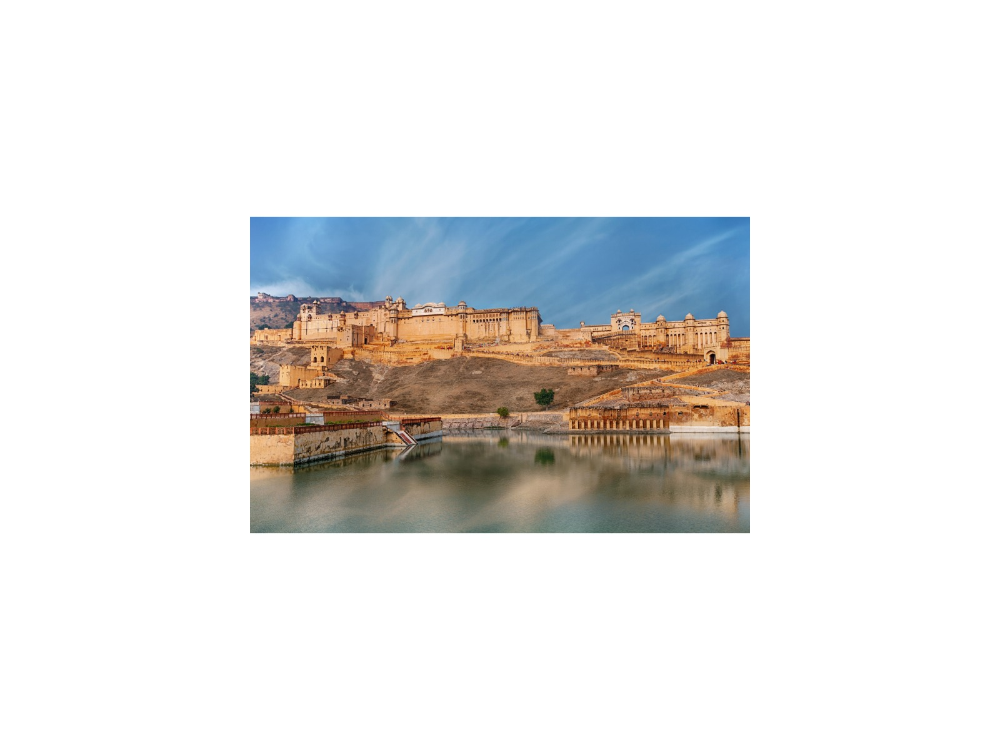
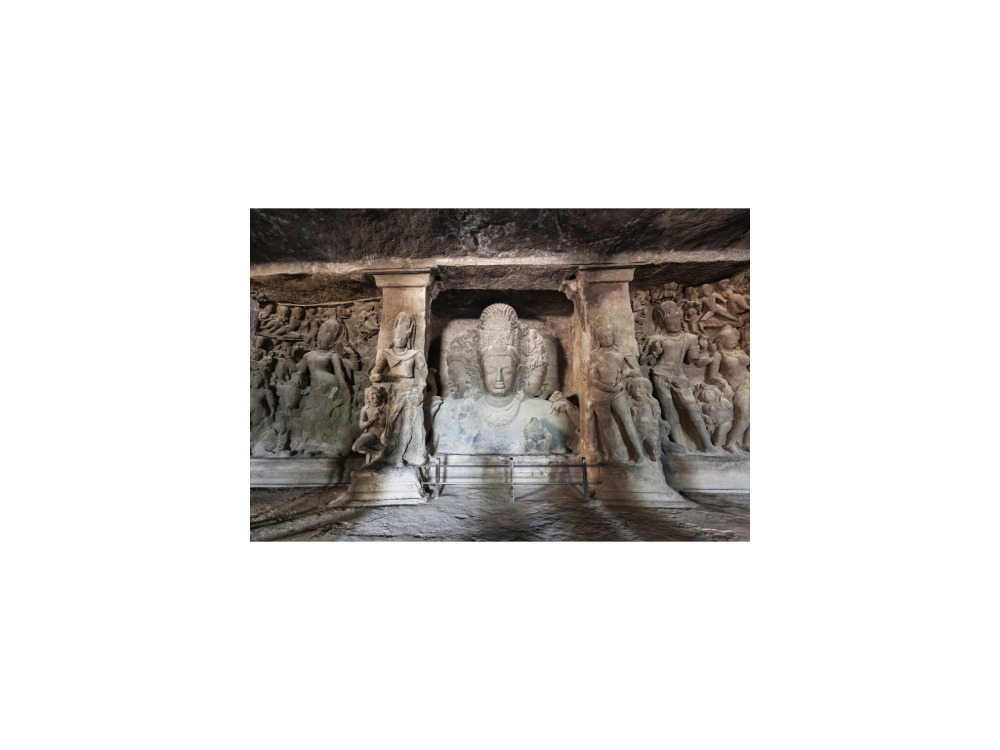
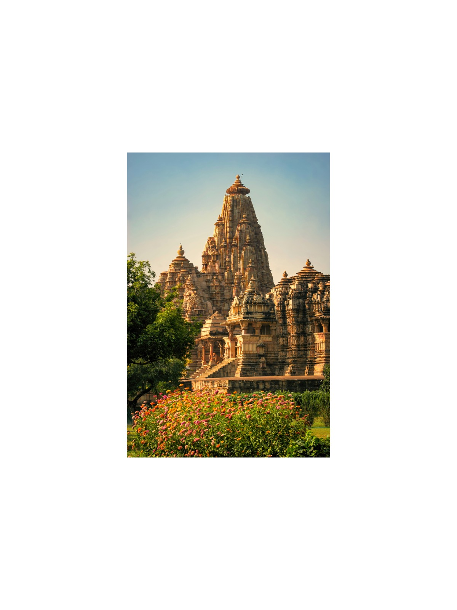
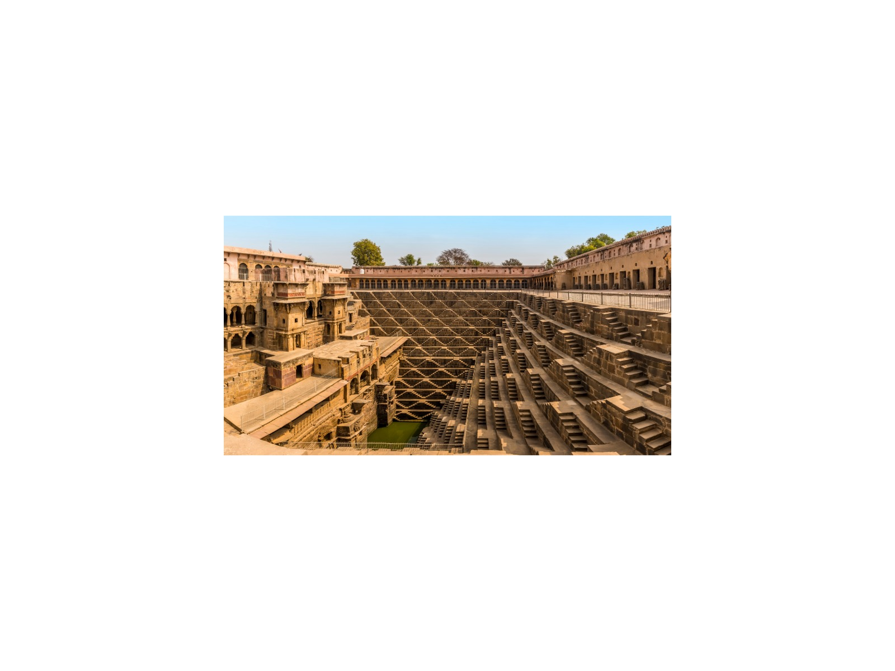
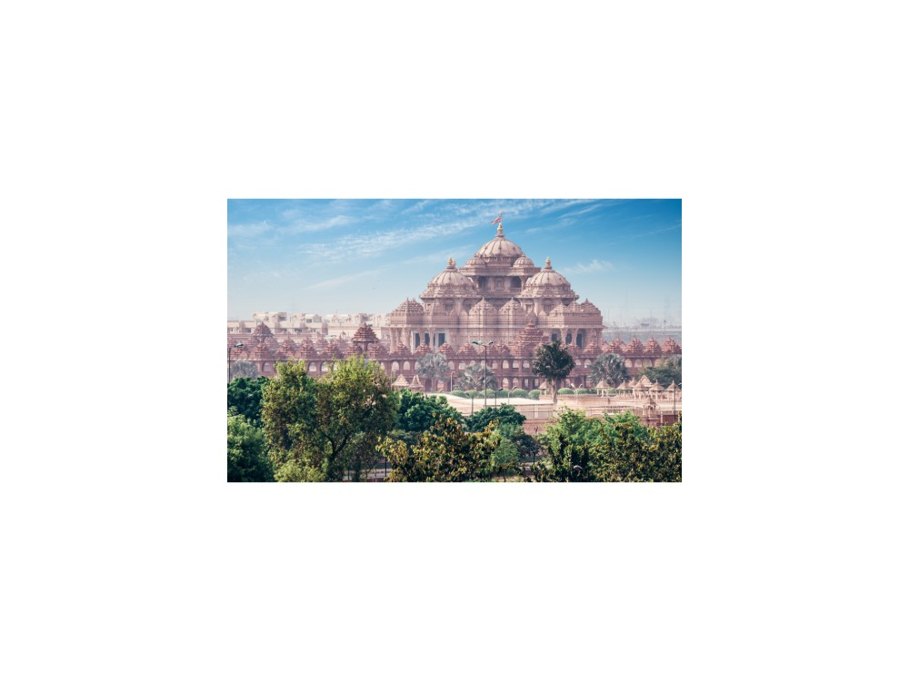
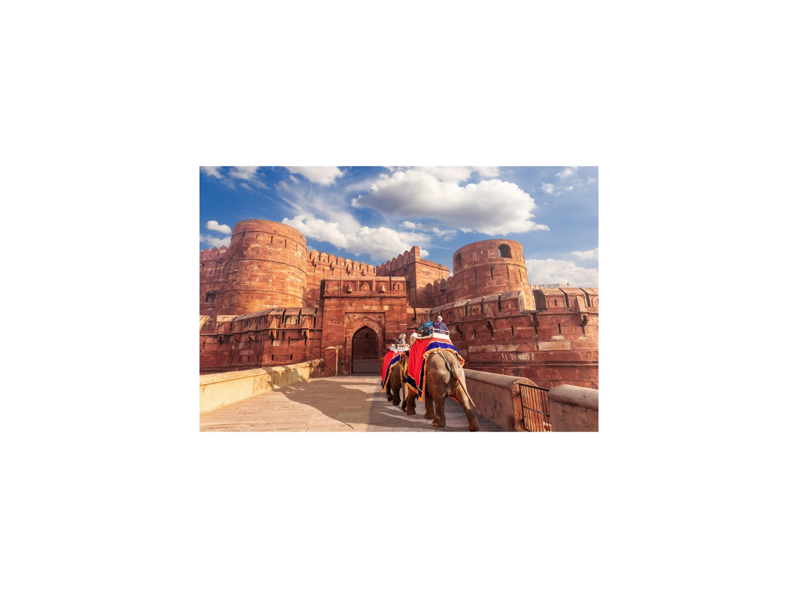
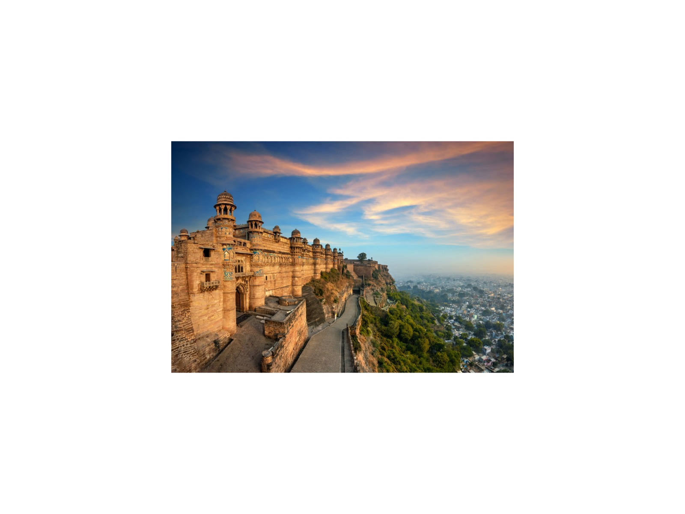
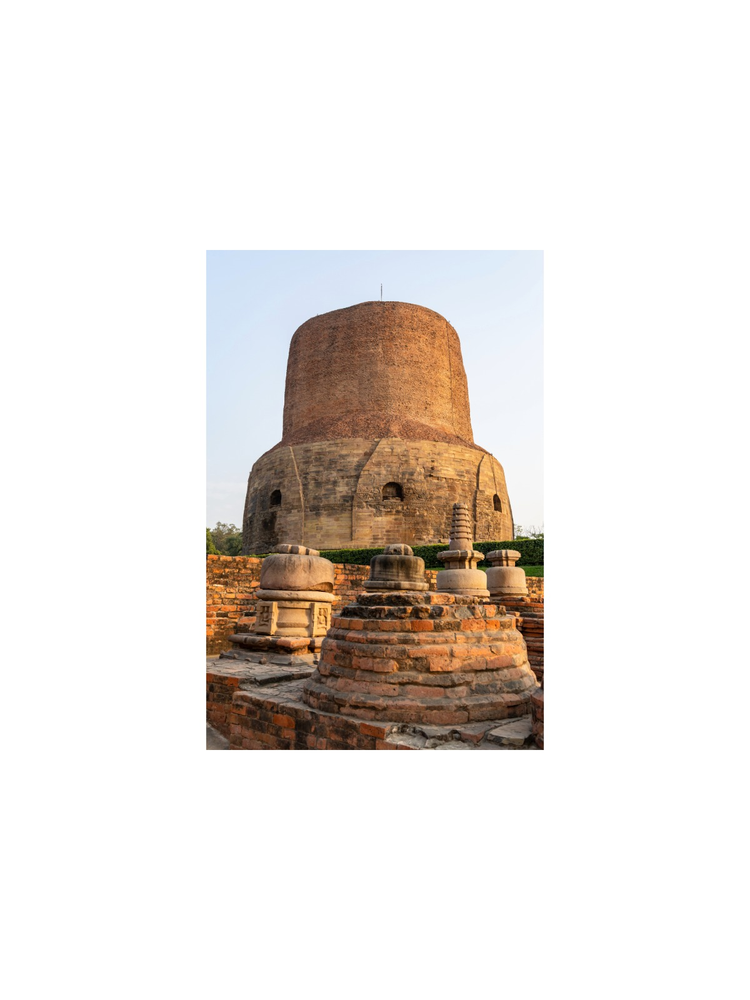
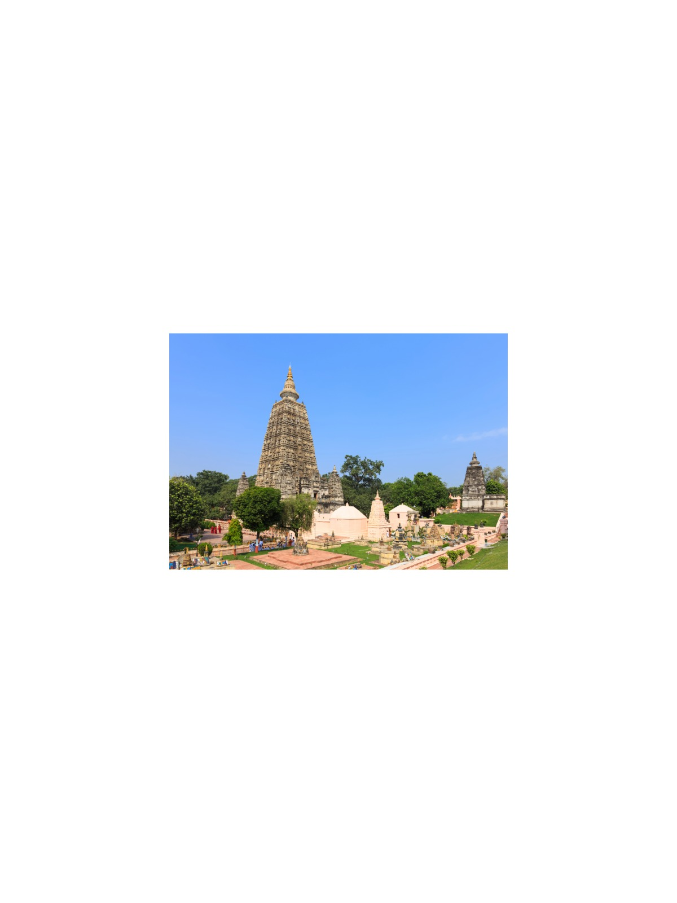

India, thoughtfully crafted around you.
Heritage, wilderness and devotion, guided privately by a Government-approved expert with more than twenty years of experience, in English or Russian.
Signature journeys
Six itineraries that show the range of India, from the Golden Triangle to the Himalayas.

4 Days4-Day Express Golden Triangle: Delhi, Jaipur & Agra
Covers key UNESCO World Heritage locations in North India while highlighting imperial dynastic architecture, defensive fortresses, and royal…
View journey →8-Day Rajputana Citadel Quest: Delhi to Udaipur
Features multiple serial UNESCO Hill Forts of Rajasthan (Amber, Kumbhalgarh, and Chittorgarh) recognized globally for military and civic…
View journey → 8 Days
8 Days8-Day Himalayan Heritage Rail: Toy Train, Kullu Valley & McLeod Ganj
Rides the UNESCO-inscribed Mountain Railways of India (Kalka-Shimla) and immerses travelers in Tibetan Buddhist and indigenous Himalayan sacred…
View journey →
9 Days9-Day Deccan Caves & Citadels: Elephanta, Ellora, Ajanta & Daulatabad
Highlights premier UNESCO rock-cut cave sanctuaries (Ajanta & Ellora) combined with formidable Deccan fortresses and sacred pilgrimage shrines across…
View journey →
4 Days4-Day Khajuraho & Varanasi: Temples, Tigers & Sacred Ganges
Features the UNESCO World Heritage Khajuraho temples and the Buddhist site of Sarnath (Deer Park), alongside a wildlife game drive in Panna Tiger…
View journey →
6 Days6-Day Golden Triangle & Wildlife Escape: Heritage to Bharatpur
Pairs the UNESCO World Heritage bird sanctuary of Keoladeo with UNESCO landmarks and formidable royal strongholds including Amber Fort and Agra…
View journey →Where would you like to go?
Destination guides with the monuments and the journeys that visit them.

Delhi
India's capital, where Mughal, Sultanate and colonial heritage sit side by side.

Agra & Fatehpur Sikri
The Taj Mahal, Agra Fort, Fatehpur Sikri and the tombs of Akbar and Itimad-ud-Daulah.
Jaipur & Abhaneri
The Pink City, its hill forts and palaces, and the ancient Chand Baori stepwell.

Khajuraho, Orchha & Gwalior
Khajuraho's UNESCO temples, Panna Tiger Reserve and the palaces of Orchha and Gwalior.

Varanasi & Sarnath
The Ganges ghats, evening aarti and Sarnath, where the Buddha gave his first sermon.

Bodh Gaya & the Buddhist Circuit
Bodh Gaya, Gaya, Rajgir, Nalanda and Patna: the ancient pilgrim circuit of Bihar.
Why travel privately
Your pace
No group schedule. We linger where you are curious and skip what does not interest you.
One guide, start to finish
The same expert with you throughout, with a private car and driver.
In your language
Fluent English and Russian, with a background in law and Russian literature that shapes how India's history is told.
How it works
Enquire
Tell me your interests and dates.
Receive
A tailored itinerary and price within 24 hours.
Travel
Your private guide, car and driver, at your pace.

Namaste, I am Vikramjeet Singh
For over twenty years I have guided travellers from around the world through India's great monuments, temples and wild places. Every journey I design is private, unhurried and shaped around the person I am guiding.
Read my storyTell me your dates and interests
I will personally prepare an itinerary and quotation within 24 hours. No groups, no fixed scripts.